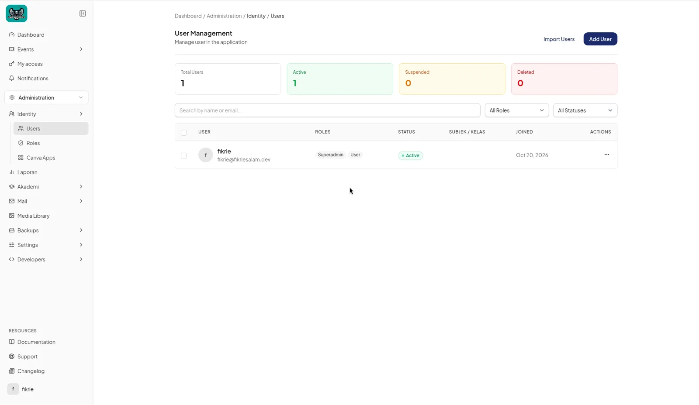
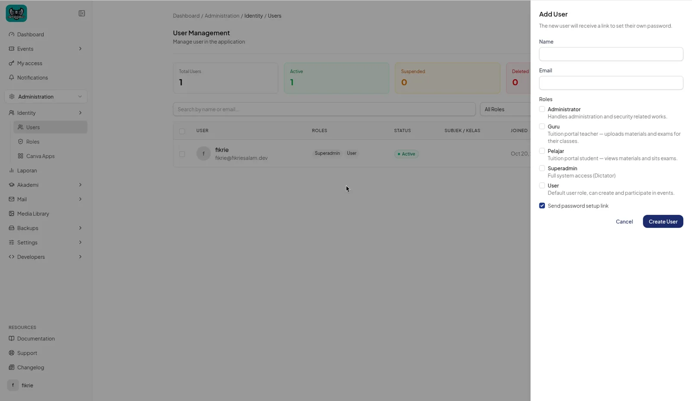
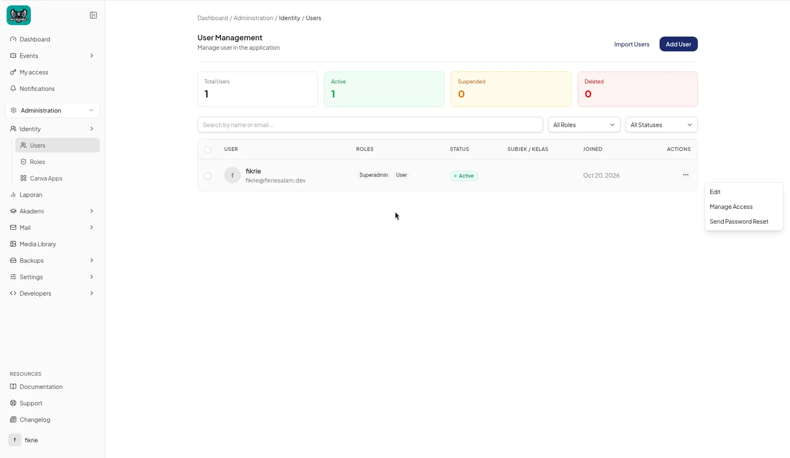
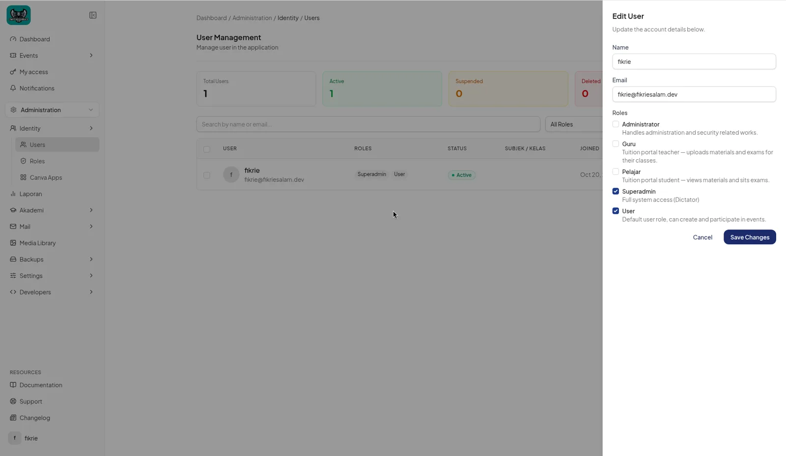
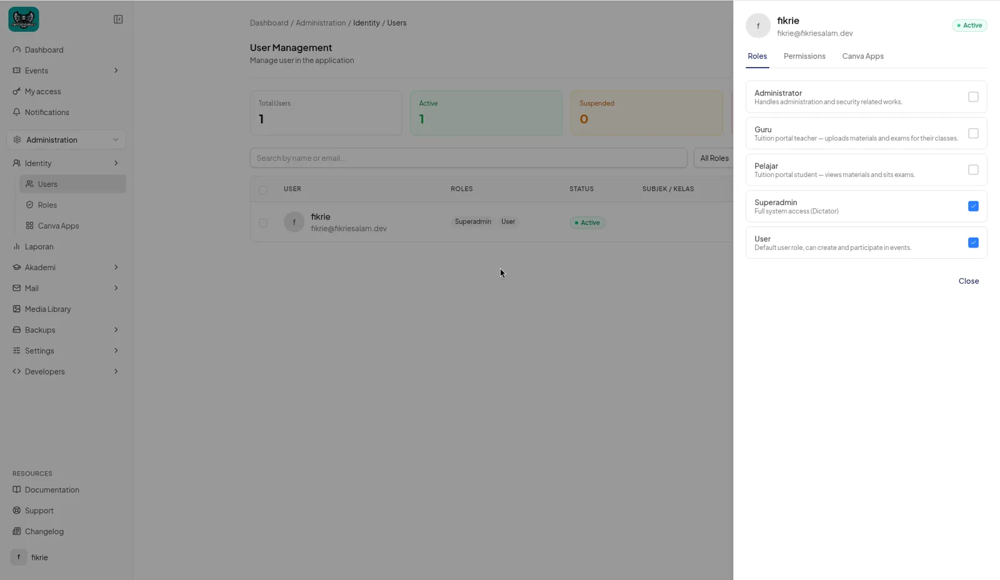
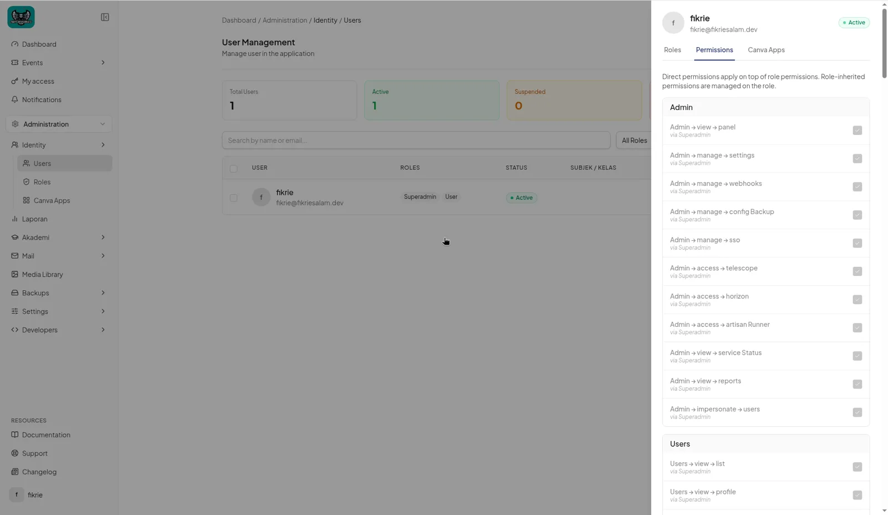
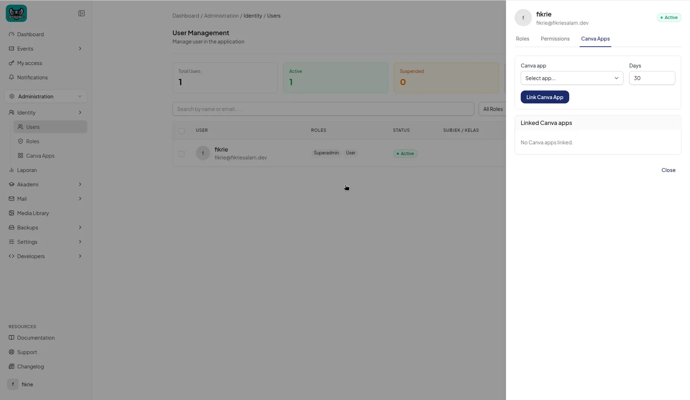

How to manage users
Add new users, give them the right roles and access, and keep accounts up to date.
On this page
You need an Administrator or Superadmin role to manage users.
1. Open User Management
- In the left sidebar, open Administration › Identity › Users.
- The User Management page opens. At the top are summary cards (Total Users, Active, Suspended, Deleted) and the buttons Import Users and Add User.

2. Find a user
- Type a name or email in Search by name or email.... Results update as you type.
- Narrow the list with the All Roles filter (pick a role) and the All Statuses filter: Active, Suspended, Unverified or Deleted.
- Click a row to see the user's details, or use the … menu at the end of the row for actions.
3. Add a user
- Click Add User (top right). A side panel opens.
- Enter the user's Name (required).
- Enter their Email (required, must be a valid address not already used by another user).
- Under Roles, tick one or more roles:
Role Use it for Administrator Staff who handle administration and security. Guru Teachers. You can also tick the subjects they teach under Subjek Diajar. Pelajar Students. You must then choose a Kelas (class) and the Bulan Mula Yuran (fee start month). Superadmin Full access. Only visible to Superadmins. User Standard self-service account. Every user always has this role. - Leave Send password setup link ticked so the user gets an email to choose their own password. (You never type a password for them.)
- Click Create User. A confirmation message appears and the user is added to the list.

4. Edit a user
- Click … on the user's row and choose Edit.
- Update the details and click Save Changes.
If you change a user's email address, they will need to verify the new address.


5. Manage access
- Click … on the user's row and choose Manage Access.
- Roles tab: switch roles on or off. Each change is saved immediately.
- Permissions tab: grant extra individual permissions on top of what the user's roles already give.
- Canva Apps tab: choose a Canva app, enter the number of days of access (1–3650), and link it to the user.



Change many users at once: tick the checkboxes beside several users, choose a role in Assign role... and click Apply.
6. Send a password reset
- Click … on the user's row and choose Send Password Reset.
- The user receives an email with a link to set a new password.
7. Suspend or reactivate a user
- Open the user's actions and choose Suspend, then confirm. The user can no longer sign in.
- To restore sign-in, choose Activate.
You can't suspend your own account, and only a Superadmin can suspend another Superadmin.
8. Delete or restore a user
- Open the user's actions and choose Delete.
- In the Padam window, type the user's name exactly as shown (capital letters matter).
- Click Padam. The user moves to the Deleted status.
- To undo, filter by Deleted and choose Restore.
A user can't be deleted while they have an active subscription. You'll see the message "Pengguna ini masih mempunyai langganan aktif." You also can't delete your own account. To delete several users at once, tick them, click Delete and type PADAM to confirm.
9. Import users
- Click Import Users.
- Download the template, fill in your users, and upload it.